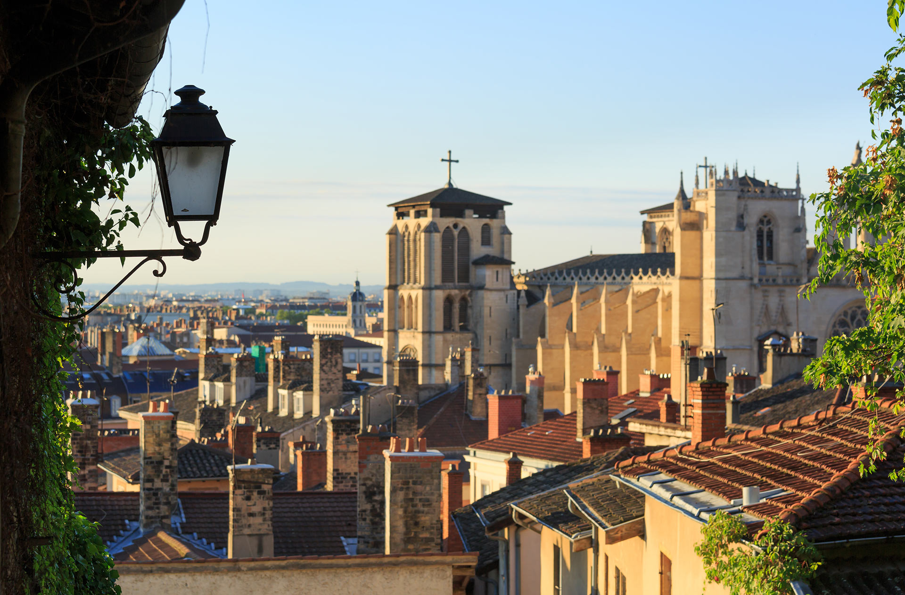
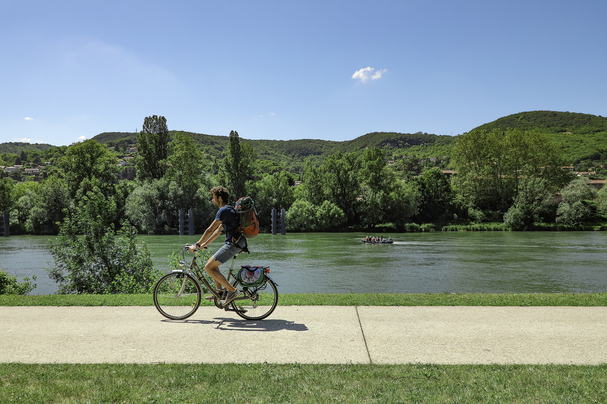

Discover Lyon
Sander van der Werf 1920
La-Confluence-Tourisme

ROCHETAILLEE GuillaumeRobert Famy
Discover Lyon
Discover Lyon
Discover Lyon
Discover Lyon
Discover Lyon
Discover Lyon
Discover Lyon
Discover Lyon
Discover Lyon
Discover Lyon
Discover Lyon
Discover Lyon
Discover Lyon
Discover Lyon
Discover Lyon
Discover Lyon
Discover Lyon
Discover Lyon
Discover Lyon
Discover Lyon
Recent Events

The Péristyle Festival is a vibrant celebration of music, dance, and art. Taking place in the stunning setting of the ancient Roman theater, the Péristyle, the festival offers a unique blend of classical and contemporary performances, captivating audiences with its diverse lineup of artists. From renowned orchestras to emerging talents, the festival showcases the best of the musical world, creating an unforgettable experience for all who attend.

The Metropolis of Lyon is proud to host the 47th edition of the WorldSkills Global Competition 2024 from 10 to 15 September at Eurexpo. This major event aims to promote know-how and highlighting the excellence of skills. It will welcome 1500 young professionals under the age of 23, practising 59 skills. They come from all over the world for this competition expecting 250,000 visitors. A challenge for youth, economy and society.

Since 1946, Les Nuits de Fourvière has brought together audiences on its terraced seating beneath the stars. Each summer in June and July, the festival returns the ancient theatres to their original function, as venues for the performing arts, including music, dance, opera, drama and circus. While in Paris, artists dream of seeing their name on the bill at L'Olympia, in Lyon, they yearn to perform at Les Nuits de Fourvière!

A street corner or the front of a building become outdoor canvases, offering pleasant surprises for passers-by. Peinture Fraîche Festival pays tribute to street art in its various forms, ranging from stencil to live painting and giant wall paintings. Over the course of many weeks, visitors are offered a rich and varied programme, including workshops, art shows and conferences. This exceptional festival is a cultural melting pot, attracting both connoisseurs and people who are simply curious.

The European Heritage Days, held annually across Europe, are a celebration of the continent's rich and diverse cultural heritage. This pan-European event, organized by the Council of Europe, offers a unique opportunity to discover and appreciate the historical treasures and cultural landmarks that make Europe so special. For two days each September, thousands of sites, museums, monuments, and historical buildings open their doors to the public, offering guided tours, exhibitions, workshops, and special events.

Present in the world capital of gastronomy since 2011, the Salon du Chocolat de Lyon is the unmissable event for all chocolate lovers. It exceptionally brings together for 3 days the greatest chocolate makers from the region and from all over France.
History and Events
Special Food
.jpg)
Bugnes (Angel Wings): Bugnes are typically made with a simple dough of flour, eggs, milk, and butter, and are often flavored with lemon zest or orange blossom water. The dough is rolled out, cut into strips, and then twisted into a distinctive "angel wing" shape before being deep-fried until golden brown.
.jpg)
Lyonnaise Bistro Cuisine (Cuisine Lyonnaise): Renowned for its traditional, hearty, and simple dishes, often using fresh local ingredients like pork, beef, vegetables, and herbs.
.jpg)
Lyonnaise Cheese (Fromage de Lyon): A semi-hard cheese made from milk and whey, boasting a smooth texture and a slightly acidic flavor.
.jpg)
Lyonnaise Desserts (Desserts Lyonnais): Known for their delicate textures and unique flavors, classic Lyonnaise desserts include: Lyonnaise Pudding (Pâté de Pâté) and Lyonnaise Chocolate Cake (Gâteau de Lyon).
.jpg)
Lyonnaise Salad (Salade Lyonnaise): Known for its unique flavor and rich texture, typically containing lettuce, bacon, boiled eggs, onions, and vinaigrette dressing, sometimes with toasted croutons.
.jpg)
Lyonnaise Sausage (Saucisson Lyonnais): A flavorful sausage made from pork, spices, and red wine, known for its rich taste and firm texture, a staple on local tables.
.jpg)
Lyonnaise Wines (Vins de Lyon): Produced in the Rhône Valley, known for its unique terroir and production of various wine styles.
Notable People

Allan Kardec
A French educator and writer who is considered the founder of Spiritism, a philosophy and religious movement that emphasizes communication with spirits. He authored the influential book "The Spirits' Book," which outlined the basic principles of Spiritism.

André Coindre
A French Catholic priest who founded the Congregation of the Missionaries of the Sacred Heart in 1850. He dedicated his life to serving the poor and marginalized, particularly in Latin America.
Blandina
A young Christian from Lyon, endured brutal torture during the Roman persecution but remained steadfast in her faith. Her unwavering commitment made her a powerful symbol of Christian strength and resilience.
Irenaeus
A prominent early Christian theologian and bishop of Lyon in the late 2nd century. He is known for his writings against heresy and his defense of orthodox Christian doctrine, particularly his work "Against Heresies."

Jean-Baptiste Pompallier
A French Catholic bishop who served as the first Bishop of Auckland, New Zealand. He played a significant role in the establishment of the Catholic Church in New Zealand and the evangelization of the Māori people.